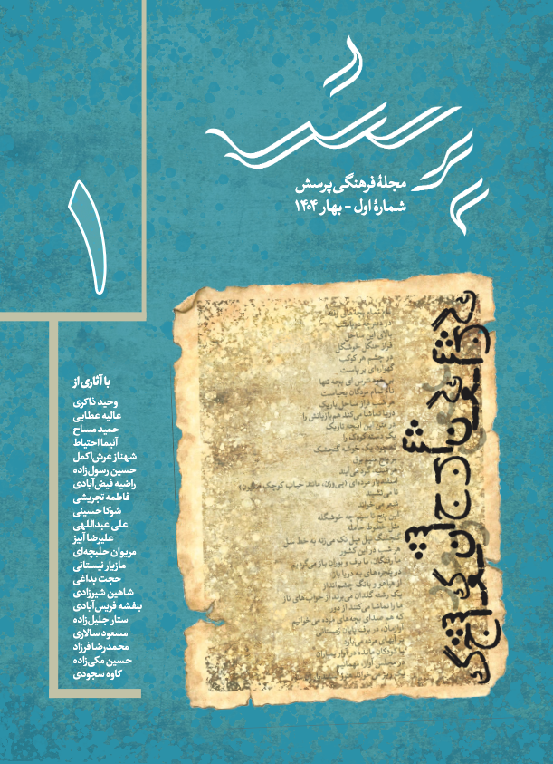

پرسش، انجمنی غیرانتفاعی است که در شهر ونکوور کانادا به ثبت رسیده و از اوایل سال ۱۴۰۲ شمسی فعالیتش را آغاز کرده است. فعالیتهای انجمن در سه حوزهی شعر، داستان، نظریه و نقد متمرکز بوده و زیر این سرفصلها نشستهایی با تکیه بر بستر مجازی و با مشارکت شاعران، نویسندگان، پژوهشگران و نظریهپردازان ساکن ایران و دیگر نقاط دنیا برگزار کرده است. انتشار نشریهای در قالب فصلنامه یکی دیگر از فعالیتهای این انجمن فرهنگی است.
بیشتر